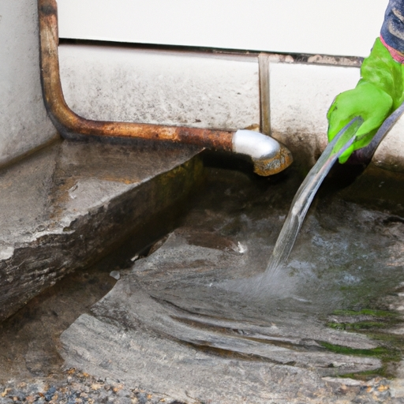

News
Emergency Plumbing Service
Emergency Plumbing Service
Burst pipe repair
Clogged drain cleaning
Water heater repair
Toilet repair
Burst Pipe Repair
Burst Pipe Repair
Causes of burst pipes
Signs of a burst pipe
Steps to take when a pipe bursts
Tools needed for pipe repair
Prevention tips for burst pipes
Clogged Drain Cleaning
Clogged Drain Cleaning
Common causes of clogged drains
DIY methods for unclogging drains
Professional drain cleaning services
Preventing future clogs in drains
Chemical vs natural drain cleaners
Water Heater Repair
Water Heater Repair
Signs of water heater problems
Types of water heaters
DIY water heater repairs
When to call a professional
Water heater maintenance tips
Toilet Repair
Toilet Repair
Common toilet issues and solutions
How to fix a running toilet
Replacing a toilet fill valve or flapper
Upgrading to an efficient toilet model
Tips for preventing toilet clogs
About Us
Contact Us
How to Quickly Fix a Leaking Faucet in Minutes

How to Quickly Fix a Leaking Faucet in Minutes
Posted by on 2024-08-19
Are you tired of that annoying dripping sound coming from your leaking faucet? Don't worry, I'm here to help! In just a few simple steps, you can quickly fix that leaky faucet in minutes.
First things first, turn off the water supply to the faucet. This will prevent any further water damage and make it easier to work on the problem. Next, gather your tools - a wrench, screwdriver, and replacement washers or O-rings.
Now, start by removing the handle of the faucet. This can usually be done by unscrewing a small screw on the top or side of the handle. Once the handle is removed, you will see a nut holding the stem in place. Use your wrench to loosen and remove this nut.
With the stem exposed, you should see either a washer or an O-ring at the base. These are common culprits for causing leaks in faucets. Inspect these parts for any signs of wear or damage. If they look worn out, it's time to replace them with new ones.
Simply remove the old washer or O-ring and replace it with a new one of the same size and shape. Make sure everything is properly aligned before reassembling the faucet.
Once everything is back in place, turn on the water supply and test out your handy work. If done correctly, you should no longer hear that annoying drip coming from your faucet.
In just a few minutes and with minimal effort, you have successfully fixed your leaking faucet. Now sit back and enjoy the peace and quiet of a drip-free sink!
Previous
Next